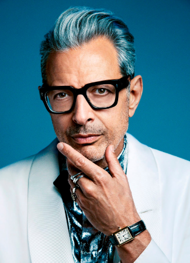

Home
Películas
Actores
Productos
Home
Películas
Actores
Productos

| Nombre actor | Sam Neill |
| Interpreta a... | Grant |
| Ocupación | Arqueólogo |
| Edat | 77 años |
Nigel John Dermot «Sam» Neill es un actor neozelandés nacido en Reino Unido. Conocido por su papel de Damien Thorn en Omen III: The Final Conflict y de Alan Grant en Parque Jurásico. Posee nacionalidad británica, irlandesa y neozelandesa, pero se identifica principalmente como neozelandés.

| Nombre actor | Laura Dern |
| Interpreta a... | Ellie |
| Ocupación | Arqueóloga |
| Edat | 57 años |
Laura Elizabeth Dern, conocida como Laura Dern, es una actriz y productora estadounidense. Ha recibido numerosos galardones, incluido un Premio Óscar, un Premios Primetime Emmy, un Premio BAFTA y cinco Globos de Oro.

| Nombre actor | Jeff Goldblum |
| Interpreta a... | Ian Malcolm |
| Ocupación | Matemático |
| Edat | 72 años |
Jeffrey Lynn Goldblum, más conocido como Jeff Goldblum, es un actor y músico estadounidense. Su carrera comenzó con la película Death Wish (1974) donde interpretaba a un maleante y desde entonces se ha destacado en películas taquilleras como La mosca (1986), Parque Jurásico (1993), Independence Day (1996), El mundo perdido (1997), Jurassic World: el reino caído (2018), entre otras. Entre 2009 y 2010 interpretó al detective Zach Nichols en la serie Law & Order: Criminal Intent.

| Nombre actor | Richard Attenborough |
| Interpreta a... | Hammond |
| Ocupación | Presidente de International Genetic Technologies, Inc. |
| Edat | Fallecido en 2014 (90 años) |
Richard Samuel Attenborough, barón Attenborough de Richmond-upon-Thames, fue un actor, director y productor de cine británico. Fue presidente de la Real Academia de Arte Dramático y de la Academia Británica de las Artes Cinematográficas y de la Televisión.

| Nombre actor | Martin Ferrero |
| Interpreta a... | Gennaro |
| Ocupación | Abogado |
| Edat | 77 años |
Martin Ferrero es un actor estadounidense. Ferrero abandonó la secundaria después de su segundo día de clases y se unió al Teatro de Actores de California en Los Gatos, California. En 1979 se mudó a Los Ángeles y comenzó a actuar en Hollywood.